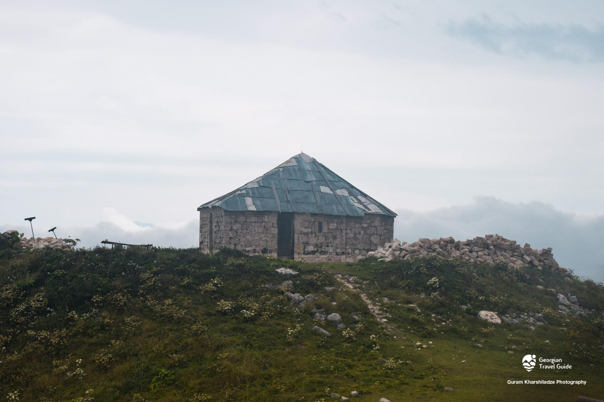

ხვამლის ეკლესია
ხვამლის ეკლესია ლეჩხუმში, ხვამლის მთაზე მდებარეობს. ამჟამინდელი ტაძარი 1910 წელსაა აგებული, მის გვერდით XII-XIII საუკუნის ნაეკლესიარიც არის შემორჩენილი. ახალი ტაძრის მშენებლობისას აღმოაჩინეს ქვა ასომთავრული წარწერით, რომელიც ამჟამად ქუთაისის მუზეუმში ინახება: “წმინდაო გიორგი მეოხ და მფარველ ექმენ ერისთავთერისთავსა ენს სულითა და შვილთა მისთა”. ახალი ეკლესია დარბაზულ ნაგებობას წარმოადგენს, აღმოსავლეთით ხუთწახნაგა შვერილი აფსიდით. შესასვლელი სამია - დასავლეთით, სამხრეთითა და ჩრდილოეთით, სამივე სწორკუთხაა. ნაგებობა ერთსაფეხურიან ცოკოლზე დგას. ფასადები სრულიად სადაა. ეკლესია ნაკებია კირქვითა და შირიმით, გადახურულია თუნუქით. აქვე შემორჩენილია გალავნისა და სენაკების ნაშთები. გალავანს ორი შესასვლელი ჰქონდა: აღმოსავლეთიდან და სამხრეთიდან. სამხრეთის კარიბჭე მომდევნო ეტაპზე ამოუშენებიათ და სენაკად უქცევიათ. ამ სენაკის დასავლეთით კიდევ ერთი, უფრო დიდი ზომის, სენაკის ნაშთია. ხვამლი უძველესი დროიდან მთელი ლეჩხუმის (თაკვერის) ერთ-ერთ მთავარ სალოცავ ადგილს წარმოადგენდა.

მერია
რუსთაველის ქუჩა N 58
(+995) 599 18 24 25
tsagerimeria@gmail.com
საკრებულო
რუსთაველის ქუჩა N 69
(+995) 551 17 97 41
tsagerisakrebulo@gmail.com